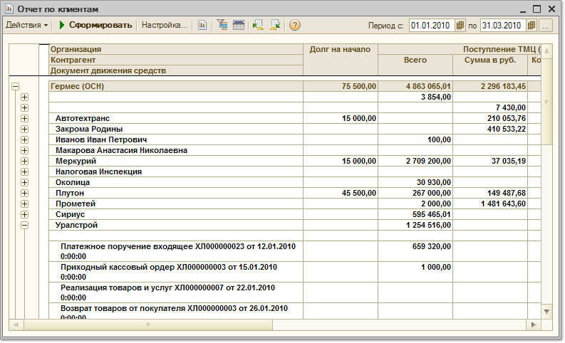

Отчет предназначен для учета взаиморасчетов с клиентами (контрагентами). В отчете предоставляется полная информация о всех документах, оформленных с контрагентом (поставщиком, покупателем) и о состоянии взаиморасчетов с ним.
Для детализации взаиморасчетов с контрагентами по документам необходимо в список группировок отчета добавить группировку «Документ движения средств».
В отчете также предоставляется возможность детализировать данные до уровня позиций номенклатуры. Для этого необходимо в список группировок добавить группировку «Номенклатура». В этом случае в отчете можно получить информацию не только о том, какими документами производилась отгрузка (поступление) и оплата товара от контрагента, но и о том какие именно товары отгружались покупателю или какие товары поступали от поставщика.
Отчет может быть сгруппирован по договорам контрагентов и по сделкам (заказам покупателей, заказам поставщикам, расчетным документам).
В качестве показателей отчета используется количество (в единицах хранения остатков), цена, по которой товар поступал от контрагента или отгружался контрагенту и сумма поступления или отгрузки.
Цена и сумма в отчете отображаются в валюте управленческого учета.
С помощью установки параметров отбора, представленных в отчете, можно отобрать информацию по конкретному контрагенту, группе контрагентов, произвольному списку контрагентов, по контрагентам, имеющим определенные свойства и категории. Кроме этого с помощью установки параметров отбора можно отобрать информацию по договорам, сделкам, позициям номенклатуры, характеристикам номенклатуры.
В таблице сформированного отчета имеются следующие графы:
